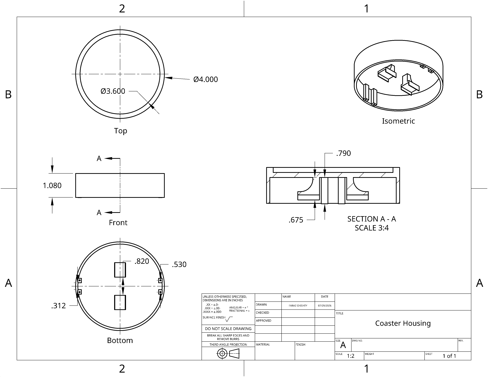
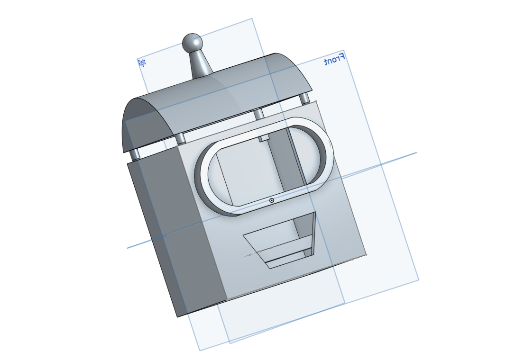
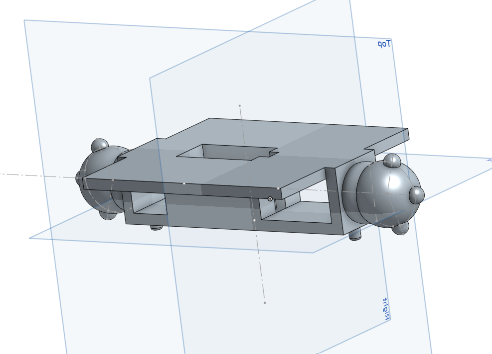

Surfboard Propulsion System
---- What is This Thing? ----
Good question! Working with a team of four engineers, I helped develop a purely mechanical propulsion system designed to assist with one of the biggest challenges beginner surfers face: paddling. This was my capstone project for Rutgers University.
------- The Design -------
The system stores energy in two extension springs and releases it at the pull of a lever, producing a short burst of forward thrust. It consists of three main subsystems:
- Paddle: A flexible neoprene paddle travels along an aluminum rail, driven by two high-strength springs. When released, it travels through the water and generates thrust.
- Winch: A hand-cranked, ratcheting winch provides a 26:1 mechanical advantage, allowing the user to reload the paddle effortlessly while remaining on the board.
- Trigger: A custom-machined, crossbow-inspired mechanism locks the paddle under load. A manual safety and multiple release safeguards prevent accidental deployment.
------- Manufacturing -------
The aluminum rail system had extrusions cut into it to fit the trigger, while the paddle was constructed from a 0.25-inch neoprene sheet supported by an aluminum frame. Two high-strength extension springs, each with a spring constant of approximately 375 N/m, powered the paddle. The winch, springs, and Dyneema rope were selected for their strength, durability, and suitability for wet environments. Finally, CNC and traditional milling were used to manufacture the aluminum trigger housing, latch, handle, and safety components.
------- Deployment -------
To use the system, the rider would follow these steps:
- Attach the winch rope’s carabiner to the paddle trolley.
- Engage the winch ratchet to prevent backward motion.
- Turn the crank to pull the paddle along the rail until it securely clicks into the trigger.
- Remove the carabiner from the trolley.
- Disengage the trigger’s safety and the winch ratchet.
- Push the lever on top of the board and catch that wave!
------- Testing -------
After manufacturing was completed, we tested the system in the Werblin Olympic Pool with riders of varying mass. Here are some of the results we gained from testing:
- Accelerated the board from rest to 2.5 m/s within 0.2 seconds
- Stored approximately 211 J of spring energy
- Withstood a maximum spring load of 126 lbf
- Achieved a 4.7 factor of safety for the trigger
- Built for $325, less than half of the $700 budget
------- Documentation -------
For a more detailed breakdown of this project, please refer to the project report here:
Surfboard Propulsion System Report PDF


Promotional Video
Underwater Testing

Tutorial Video
Motor Coaster
--- What Am I Looking At? ---
You're looking at the world's first automatic coaster. Gone are the days of condensation stains on tables, and yelling at guests to use a coaster!
Drawing inspiration from the movement system of a Roomba, the design uses two powered wheels and caster wheels for stability. This setup allowed the coaster to move quickly in a straight line, make tight turns, and rotate in place by spinning the powered wheels in opposite directions.
--- Caster Wheel Design ---
My first caster-wheel prototype used two bearings: one allowed the caster to swivel, while the other sat inside the wheel hub to provide smooth rotation for the 3D-printed wheel. During preliminary testing, I found that a single caster wasn't going to cut it. There were issues with stability causing the coaster to tip over, as well as issues with the swivel when turning 360 degrees.
I replaced the single caster with two ball casters positioned on opposite sides of the housing. This change improved stability and eliminated the tilt and turning issues caused by the original swivel mechanism.
----- Housing Design -----
The main housing was designed in Onshape and 3D printed using the Bambu Lab P1S. Some of the design specs include:
- 4" diameter, close to the size of a standard coaster
- Two central extrusions 0.675" tall serve as mounting points for the electric motors
- 0.82" gap between motor extrusions to allow space for the battery housing
- Two 0.79" tall extrusions at the front and rear secure the ball casters.
The wheel and caster mount dimensions were carefully calculated to ensure that the lowest point of each wheel sat on the same plane to minimize tilt. Each caster was screwed and secured into thier respective mounts.
----- Electronics -----
During early testing, I mounted a webcam to a selfie stick above the coaster to provide an overhead view for image processing. This setup allowed me to develop and evaluate the coaster’s visual tracking and navigation system before creating a more permanent camera installation.
----- Algorithms -----
The system uses a bird’s-eye camera and a computer-vision algorithm written in Python with OpenCV. Because most cups and bottles have circular openings, the algorithm detects new circular objects entering the camera’s frame while ignoring objects that were already present.
An ArUco marker mounted on the coaster allows the camera to determine its position in pixel coordinates. The camera then calculates the approximate positional error between the coaster and its target and sends steering commands to the coaster over Wi-Fi. A proportional control system continuously adjusts the coaster’s trajectory, allowing it to reach the target quickly and accurately.
----- Testing -----
To test the design concept, I placed the coaster at the upper-right corner of a 4 × 3 ft table. Throughout testing, I adjusted the proportional controller’s gain (K) to minimize wheel slippage and reduce both translational and rotational overshoot.
When a bottle was held above the center of the table, the coaster took approximately four seconds to move into position underneath it. These results successfully demonstrate the concept, but further tuning is needed to improve its speed and responsiveness. The ultimate goal is for the coaster to arrive before the user is ready to set down their drink, eliminating any noticeable waiting time.
----- V2 Concept -----
To eliminate the bulky external overhead camera, the second version of the coaster will be completely self-contained. Covering the area around the coaster with multiple cameras would require excessive processing, while continuously rotating a single camera would be disruptive or inefficient. My proposed solution is as follows:
When a user prepares to set down a cup, the PIR sensors will detect the movement of their warm arm. The triggered sensor will indicate its approximate direction, allowing the coaster to rotate toward it. The camera will then use a YOLO object-detection algorithm to confirm that the user is holding a cup. Once confirmed, the ToF sensor will measure the distance to the cup as the coaster moves toward it.





Overshoot example
Testing after tuning

Dice Rolling Robot
--- What's going on here? ---
This little guy is the RAPHAN ROBOT. Modeled after Bender from the show Futurama, he serves as an interactive alternative to traditional dice. He digitally rolls the dice on his built-in LCD touchscreen and reacts to each result with a silly voice line—perfect for game nights and board games. I developed this project in just three weeks as a birthday gift for my friend, Raph.
--- The Design ---
Each component of the RAPHAN ROBOT was designed around the specific electronics it needed to house. I modeled every piece in Onshape with assembly and troubleshooting in mind. The components are modular, allowing them to be easily connected, removed, and reassembled. Once finalized, they were 3D-printed using a Bambu Lab P1S.
The robot consists of three main sections:
-
The Head
- Houses the display, power source, and audio output.
- Includes a frame that firmly holds the 4" x 2" display
- Rotates from side to side
- Allows wiring to pass from the screen into the body
-
The Arms
- Designed with a central enclosure, precisely sized to securely house a servo measuring 1.6" x 0.2"
- Uses built-in pegs for easy attachment and removal to the chest housing
-
The Chest Housing
- Houses the robot’s main electronics.
- Fits the main components in a central frame.
- Includes a hinged door for easy access to the wiring
--- Electronics ---
- Arduino Uno: The project’s main microcontroller.
- Breadboard: Kept the wiring organized and easily accessible within the spacious chest housing.
- Servo: Controls the head’s left-and-right movement.
- DFPlayer Mini and Speaker: Plays audio files stored on a microSD card. The files contained personalized voice recordings from each of Raph's friends. Each file was edited with sound effects using Audacity.
- LCD Touchscreen: Served as the robot’s main interface, allowing the user to digitally roll the dice.
----- Testing -----
During preliminary testing, I encountered several startup issues. The robot repeatedly rebooted before completing its initialization sequence, which tested all of its systems simultaneously. At the time, it was powered by four 1.5 V AA batteries.
To diagnose the problem, I tested each subsystem independently until I could consistently reproduce the failure. I discovered that the servo’s high current draw was causing the system voltage to drop, resulting in a brownout. I replaced the AA batteries with two rechargeable 18650 lithium-ion cells, which provided the current capacity needed to power the system reliably.
After the upgrade, the robot completed its startup sequence consistently. It accurately generated and displayed dice rolls, then played the corresponding voice line for each result. Once testing was complete, the robot made its debut during one of Raph’s board-game nights.






Autonomous Targeting System
-- What's this supposed to be? --
--- The Design ---
--- Testing ---
--- Version 2 ---


Version Two